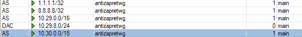

Для тех кто использует: Скрипт для автоматического развертывания AntiZapret VPN + обычный VPN (без контейнера) OpenVPN / WireGuard / AmneziaWG + Патч для обхода блокировки OpenVPN
Если в двух словах помучаться придется… все делать нужно руками но вполне возможно. Проверить как работает я не проверял запустил виртуалку с RouterOS трасировка пошла в нужное русло.
Приступим:
- Создать подключение WG:
Спойлер
{kind=link}
Дополнение в Allowed Adress нужно добавить ваши DNS с префиксом /32
К примеру в моем случае днс 192.168.2.1/32
Действительно не работает без этой настройки.
- Создать Adress List:
Спойлер
- Понизить Дистанцию Default Route вашего провайдера до 2ки:
Спойлер
- Создать список Routes:
Спойлер
{kind=link}
Дополнение:
Для того чтобы в случае падения сервера WG интернет продолжал работать конфигурацию нужно привести к такому состоянию:
А именно включить ping, и на место Gateway вбить IP адрес шлюза. Лично у меня работало все хорошо.
- Создать маскарад:
{kind=link}
{kind=link}
{kind=link}
Лично у меня по трассировкам все заработало как положено.
Дополнение если в AllowedIPs у вас указаны дополнительные ip/подсети, их все нужно вручную прокидывать в Routes.
PS добавил проверку ping в Routes, чуть изменил Adress List чтобы работало корректно.
PS подкорректировал настройку AllowedIPs в конфигурации WireGuard без этой конфигурации действительно не работает.
Дополнил в тему как сделать Routes с ping кто ранее сделал без него.
С ping в случае падения сервера интернет продолжит работать через провайдера и не пропадет.
Большое спасибо!
у меня не заработало…
может быть дело в пункте с роутом dns провайдера? который я не понял =)
у меня отклбючен use peer dns и в ip - dns вбиты dns 8.8.8.8 и 1.1.1.1
я включал юз пир днс, получал днс провайдера и его в роут добавлял. и свои восьмерки прописывал., но заблокированные сайты не открываются
Открой вкладку dns отправь сюда скрин что у тебя там.
Отправь еще скрин с Routes возможно у тебя маршруты не поднялись.

Отлично, маршруты поднялись работают, попробуй запустить пинг на 10.29.0.1 из микротика, если пинг не пошел значит WireGuard не соединился с сервером есть ошибки в конфигурации.
я олень. ошибку в конфиге нашел, 10.29.0.1 теперь пингуется
но в такой конфигурации не работаю вообще dns
Попробуй в Routes DNS включить проверку по пингу и отправить все на шлюз 10.29.8.1 как я обновил в инструкции.
Дальше уже в Tools открыть Traceroute и пробовать делать трасировку в начале до закрытых твоему провайдеру ресурсов чтобы увидеть что заработали сайты через впн
так?
ну и в первых двух роутах включен чек гетвэй пинг
если да, то ниче не поменялось
что скажет tracaroute, маскарад создан?
Замаж IP своего провайдера и скинь весь список Route что у тебя сидит еще на 1 дистанции?
{kind=link}
{kind=link}
tracerout не делается на запрещенку… dns не пашет
upd: ппц. взял и ожил dns
вот tracerout до ntc.party. я так понимаю это блокировка?
{kind=link}
upd2:
я не понимаю че происходит. трассировка по имени работает. а пинг - нет)
сайт может не отвечать на ping запрос в этом ниче такого нет.
знаешь че попробуй, попробуй днс 1.1.1.1/32 и 8.8.8.8/32 добавить в AllowedIPS WireGuard сделаем по аналогии с Keenetic. У меня почему-то работает и без этого, в твоем случае похоже что WG не пропускает днсы и трафик не летит.
Отпишись если заработает добавлю это в инструкцию для всех.
Где ж вы были 8 часов назад и день… Благодарим
Получилось сделать по первой инструкции? Или добавляли AllowedIPs?
да, так заработало
спс
Дополнил в инструкцию, щас решил потрасерить у себя днсы выставил 8ки и 1ки, и действительно не работало. Ну отлично, потестируйте какую скорость микрот выдает через WG по сравнению с OpenVPN.
у меня hap ac3
на ovpn было 30-35 мбит
на wireguard 130
Ну прирост есть можно и помучаться если нужна такая скорость)
мерил на 2ip.ua
щас запустил кучу видосов с ютубчика и на интерфейсе в пике в винбоксе было 217 =)
лишь бы корректно отрабатывал пинг чек. Т.к. падение впн сервера никто не отменял элементарно может быть на стыке где нибудь проблема)
ну для меня это не так критично. ручками выключу если что
Пробую настроить и сразу проблема с 1 пунктом - соединение не проходит дальше 92к (handshake initiation). Пока что смог разобраться с этим только на обычном клиенте wg, вроде бы даже есть решение по добавлению данного метода обхода, но версия ROS 7.17 (т.к. Device-mode) в режиме advanced есть только с этой ветки.
Там есть нюансы с ключем, в активное подключение нужен приват ключ. В пире приват вообще указывать не нужно, я первоначально тоже мучал микротик в этом направлении т.к. он не конектился к моему серваку. В целом ниче сложного нет можно победить без проблем.
имеется ввиду именно интерфейс wg? убрал инфу о закрытом ключе, но видно что начало и конец совпадают. В peers параметр private key выставлен в ‘none’
Summary
Верно, в сам интерфейс ты указываешь только приват ключ.
В пир публичный ключ и создаешь адрес. проверить произошел коннект или нет у тебя в пире появился last hanshake значит они подружились.
Пробовал и так. По итогу пока не смог добиться подключения (last handshake был, но передает только 92к), вернулся пока на OpenVPN
Я подозреваю что не правильно сделаны настройки если был Last Hanshake значит все впорядке можно переходить к пункту Adress чтобы появились маршруты на ip адреса WG. Увы но микротик это не кинетик где делается все в 2 клика. Тут нужно мучаться. Я подозреваю что попытались сделать пинг до днса не создав IP для клиента ВГ. В целом я бы оставил OpenVPN если вас он устраивает с ним меньше заморочек. WG это все таки для интузиастов и для кого реально не хватает скорости 15-30 мбит/сек и кому в реальности нужно больше. Как и описано в начале темы тут придется попотеть.
Спасибо за инструкцию, но вы бы ещё написали полные пути пунктов где всё это вбивать >_<
И много непонятного…
днс 192.168.2.1/32
Это адрес микротика? Это адрес ДНС провайдера?
Какой IP микротика?
Adress List:
Где?
Почему в одних местах 10.29.0.0/16 а в других 10.29.0.0/15 ?
вбить IP адрес шлюза
Шлюз это “впн сервер”?
- Создать маскарад:
Что там за src adress? Какая-то новая подсеть…
Я понимаю, что микротики обычно покупают те, кто шарит, но тут моей старушке соседке продали hap ac2, а она теперь снова хочет на ютубе телек смотреть 
всегда используется dns провайдера либо днс вручную вбитый в поле днс.
в WG вбивается вся подсеть чтобы не мучаться, в Adress вбивается /24 маска для получения IP т.к. в WG у тебя используется диапазон с маской /24
Шлюз это адрес DNS сервера. фактически,
Это твоя локальная подсеть там указано в спойлере.
Добрый день
вопросы по мануалу.
- при создании peer wg Allowed Adress мы берем из файла wg из строчки AllowedIPs или Указанные на картинке?
- Adress list мы создаем указанный на картинке 10.29.8.8/24 или все таки можно создать свой?
- В Routes мы создаем для каждого ip указанного в создаваемом Peer?
PS может лучше дополнить инструкцию уже готовыми скриптами с указанием того что надо поменять или дополнить
спасибо
Между делом свои 5 копеек вставлю: хап ац 2 – довольно производительный аппарат и по openvpn прекрасно держит около 60-и Мбит/с (aes-128-cbc). А по сему, может, действительно проще остаться на openvpn, коль он работает.
Ну, это так, в порядке личного мнения 
Что такое “вся подсеть”? >_<
Провайдера или ВПН?
Вот только я так и не смог его (опен-впн) настроить. Видимо потому, что по умолчанию там не cbc, а что-то другое, чего в Микротике нет.
Вся надежда на эту инструкцию >_<
Но пока смелости пойти попробовать не набрался.
cbc во всех микротиках есть и во многих (в том числе ac2) шифруестя аппаратно. Это старый протокол. Устаревший.
При всём уважении, я бы действительно добавил пример ВГ конфига и подсказки что откуда куда вставлять на конкретном примере.
А вы для OVPN как-то меняли конфиг сервера? У меня по умолчанию не завелось и я, если честно особо не старался потому, что инструкция с которой я работал озаглавливалась “ПОДУМАЙТЕ НУЖНО ЛИ ОНО ВАМ”.
Логично что можно указать свои IP адреса и добавить только днсы. В целом можно вообще не париться и указать 0.0.0.0/0 и пробрасывать только route нужные. Вариантов много.
Указываете тот IP которым у вас в файле .conf только /32 меняете на /24
Routes создаем до тех подсетей которые в AllowedIPs, но обязательно нужно завернуть ваши днс.
Увы но отредактировать свое сообщение я уже почему то не могу разве что написать новое…
Я каждый раз задаюсь вопросом зачем люди покупают микротик если не понимают в сетях, есть же Кинетики которые как раз для базового уровня знаний очень даже подходят.
Подсети это диапазоны IP адресов.
Шлюз это 1 IP адрес VPN сервера в 90% случаев используется как DNS.
OpenVPN у меня работает на прошивки 7.13+ без проблем на множестве устройств, как на древних так и на новых используя AES-128-GCM.
Для настройки можно воспользоваться этой темой: Обход блокировки на mikrotik
Тут есть косяки но если вы разбираетесь в работе профилей пробелмы можно исправить в основной ветке антизапрета по-моему в контейнере я писал как исправить проблемы связанные с работой OpenVPN. Сообщения можно найти в поиске.
Ну все вопросы к людям которые старушке для YouTube на телевизоре установили хап 2 и ещё через пару метров по силовой линии прокинули ретранслятор. (Тоже от микротика разумеется.)
Лан. Я прикалываюсь - у старушки огромный дом и ретрснслятор там возможно нужен. Но нахрена при этом кинетик я хз.
Я насколько помню стейбл для хапа был только пятой версии, а 7 тестовая.
Ну если у когото в 2020-2024 году хватает мозгов собирать Wi-Fi сети на микротиках это финиш увы. Если большой дом микрот + Ubiquti.
Поставь бету потом сразу обнову на stable и полет будет нормальный. На бете есть косяки.
Вчера весь вечер бился с микротом. Никак не смог забороть.
Интерфейс поднял, пира добавил. Last handshake проходит, на серваке пира и обмен пакетами вижу. Но спустя буквально секунд 10-15 пакеты полностью перестают приходить с сервака. Соответственно пинги на DNS 10.29.0.1 не идут. Поднял на винде обычный клиент Wireguard, заглянул в логи, там такое:
2024-10-29 07:43:45.704166: [TUN] [antizapret-client.-wg] Receiving handshake response from peer 1
2024-10-29 07:43:45.704166: [TUN] [antizapret-client-.-wg] Keypair 1 created for peer 1
2024-10-29 07:44:02.988602: [TUN] [antizapret-client-.-wg] Retrying handshake with peer 1 because we stopped hearing back after 15 seconds
2024-10-29 07:44:02.988602: [TUN] [antizapret-client-.-wg] Sending handshake initiation to peer 1
2024-10-29 07:44:08.062540: [TUN] [antizapret-client-.-wg] Handshake for peer 1 did not complete after 5 seconds, retrying (try 2)
2024-10-29 07:44:08.062540: [TUN] [antizapret-client-.-wg] Sending handshake initiation to peer 1
2024-10-29 07:44:13.231071: [TUN] [antizapret-client.-wg] Handshake for peer 1 did not complete after 5 seconds, retrying (try 3)
2024-10-29 07:44:13.231080: [TUN] [antizapret-client-.-wg] Sending handshake initiation to peer 1
2024-10-29 07:44:18.118196: [TUN] [antizapret-client-.-wg] Retrying handshake with peer 1 because we stopped hearing back after 15 seconds
Я так понимаю, провайдер блочит? Потому что сталкивался уже с похожими симптомами, когда Мегафон l2tp/ipsec положил.
Проверь WG на телефоне через клиент для него же если так же не работает, то твой сервер в черном списке
Привет, у меня точно так же, проверил, сервер не в черном списке, что еще может быть?
Значит есть ошибки при настройке, через встроенный в микротик ping tracerouter пинговать шлюз и проверять поднимается ли связь или нет.
Встроенный traceroute говорит, что шлюз недоступен. Проверил на другом микротике с другого провайдера из другой части города - такая же точно история. При этом обычный OVPN поднимается без проблем. Но у меня на нём по какой-то причине настолько низкая скорость, что сайты через раз выдают таймаут, а заблокированные сайты не открываются вовсе, из-за чего и ищу альтернативный вариант. Роутеры hap ac3 и rb3011uias. Провайдеры: ростелеком, дом.ру, мегафон. VPS на ВДСине.
Я в об этом писал в Keenetic что если уверены что сделали все правильно и шлюз не пингуется и в добавок через приложение WG не работает данный клиент. Ваш сервер впс попал в блокировку DPI и будет работать только Амнезия. Амнезии на микротике нет остается только опенвпн который пока что еще работает(вопрос на долго ли остается открытым). Проверить связался ваш микротик с сервером можно ввести на сервере команду wg
если связь видно, тут увы менять сервер если хочет именно WireGuard или остаться на OpenVPN
Спасибо, что подтвердили догадку. Эх, придется дальше колдовать над ovpn соединением.
Привет, народ.Не туда написал(
11